Mais do que uma festa, o Ypioca Folia se consolidou como uma plataforma de expressão cultural. Ao longo de sua trajetória, o evento fortaleceu a identidade carnavalesca local, aproximou artistas, comerciantes, moradores e visitantes, e reafirmou o valor do carnaval como patrimônio vivo da comunidade. Seu crescimento também reflete um compromisso com organização, impacto social, acessibilidade e pertencimento, simbolizado pela força dos blocos, do trio elétrico e dos abadás exclusivos que unem os foliões.
Carnaval, cultura e pertencimento
Ypioca Folia
Uma celebração que nasceu para valorizar a cultura popular do interior do Ceará, reunir comunidades, impulsionar artistas da terra e transformar o carnaval em experiência coletiva, vibrante e inclusiva.
Ypioca Folia
Logotipo vibrante, energia carnavalesca e uma identidade inspirada nas cores
presentes nos abadás e nas fotos do evento: amarelo, azul, rosa, verde e vermelho.
História do Evento
O Ypioca Folia nasceu há três anos como uma celebração carnavalesca que une tradição e inovação. Criado para valorizar a cultura popular do interior do Ceará, o evento cresceu em público e estrutura, tornando-se referência regional e espaço de convivência comunitária.
Atrações e Movimentos Culturais
O evento reúne música, performance, tradição e participação popular em uma programação diversa, pensada para celebrar o espírito do carnaval e valorizar a produção artística local.
Atrações Principais
- Bandas regionais e artistas da terra que garantem diversidade musical.
- Trio elétrico como símbolo da festa, arrastando multidões.
- Blocos carnavalescos que representam comunidades locais e fortalecem a identidade cultural.
- Abadás exclusivos como símbolo de pertencimento e identidade visual dos foliões.
Expressões Artísticas
- Grupos de dança e capoeira integrando o corpo e a tradição.
- Artesanato local exposto em feiras culturais durante o evento.
- Apresentações folclóricas resgatando tradições regionais.
- Oficinas culturais para jovens e crianças, incentivando formação artística.
Acessibilidade e Integração Social
O Ypioca Folia é planejado para acolher diferentes públicos, garantindo acesso, participação e inclusão em todas as dimensões da experiência.
Adequações de Acessibilidade
- Rampas e áreas adaptadas para pessoas com mobilidade reduzida.
- Espaços reservados para cadeirantes próximos ao palco.
- Equipes de apoio treinadas para atendimento inclusivo.
- Intérpretes de Libras durante os shows principais.
- Comunicação visual acessível, com sinalização clara e contrastes adequados.
Integração Social
- Campanhas sociais de arrecadação de alimentos e brinquedos.
- Parcerias com escolas e ONGs para inclusão de jovens em atividades culturais.
- Programas de voluntariado com participação de moradores locais.
- Incentivo à presença de artistas independentes e coletivos culturais.
Impacto do Ypioca Folia
O evento gera efeitos positivos em diferentes frentes, reforçando seu papel como manifestação cultural, motor econômico, atrativo turístico e ponto de conexão social.
Fortalecimento da identidade carnavalesca e valorização da diversidade artística e popular.
Geração de renda para comerciantes, artesãos e prestadores de serviço durante o período festivo.
Atração de visitantes e promoção da cidade como destino festivo e cultural.
Inclusão e integração de diferentes públicos, reforçando o caráter comunitário do evento.
Linha do Tempo
Espaço para apresentar a evolução do evento ao longo dos anos. Você pode editar, ampliar ou substituir os textos conforme for adicionando novos marcos e registros.
Ano 1
Nascimento do Ypioca Folia
Início da celebração carnavalesca com proposta de unir tradição local, música e convivência comunitária.
Ano 2
Crescimento de público e estrutura
Ampliação da programação, fortalecimento dos blocos e consolidação do evento como referência regional.
Fevereiro de 2024
Registro marcante do abadá
Referência ao registro do folião Ray e ao detalhe da data invertida no abadá, compondo a memória visual do evento.
Próximas edições
Vem ai Ypioca Folia 2027
Deixe sua reserva para o abadá 2027 nesta página do Ypioca Folia.
Identidade Visual
A linguagem visual do Ypioca Folia nasce do clima festivo das fotos e dos abadás: cores intensas, energia popular e uma tipografia alegre, forte e memorável.
- Logotipo vibrante e colorido para reforçar presença, alegria e reconhecimento da marca.
- Paleta carnavalesca baseada em vermelho, amarelo, verde, azul e tons vibrantes observados nas imagens.
- Tipografia festiva com personalidade forte para títulos e excelente leitura no corpo do conteúdo.
- Abadás como elemento de identidade coletiva e símbolo de pertencimento dos foliões.
Amarelo folia
Azul abadá
Rosa festa
Verde cultura
Vermelho energia
Galeria de Fotos
Os registros da linha do tampo estão formalisadas nessa fotos abaixo mostrando o progresso do evento a cada ano.
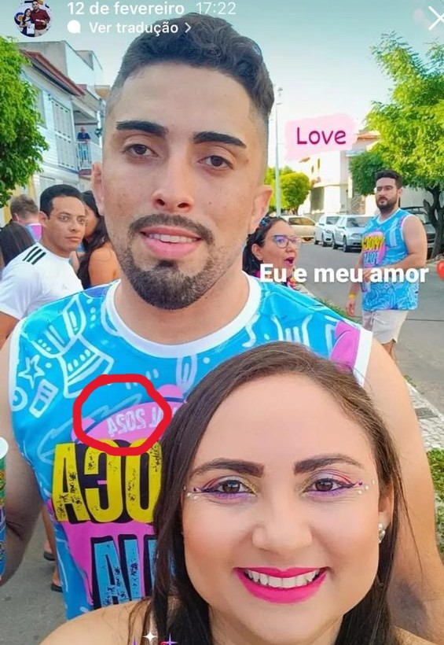
Ypioca Folia - Segunda 12/02/2024
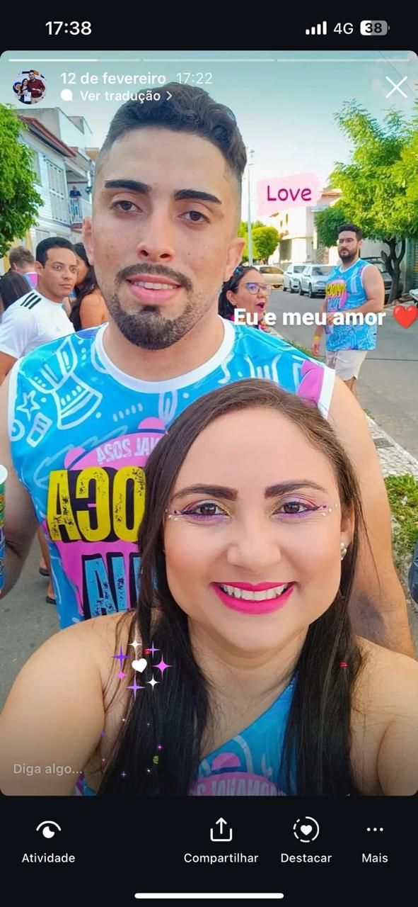
Ypioca Folia 2024.
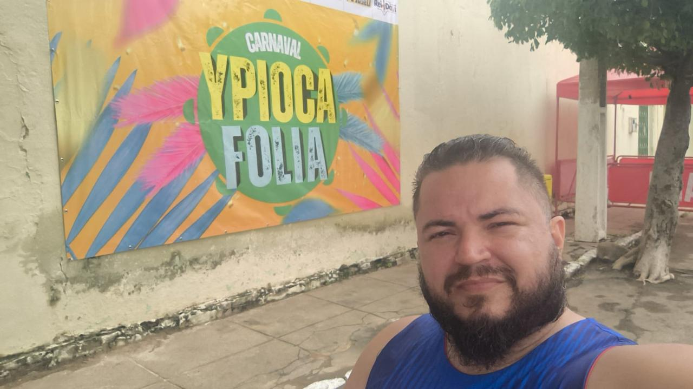
Banner Ypioca Folia 2025.
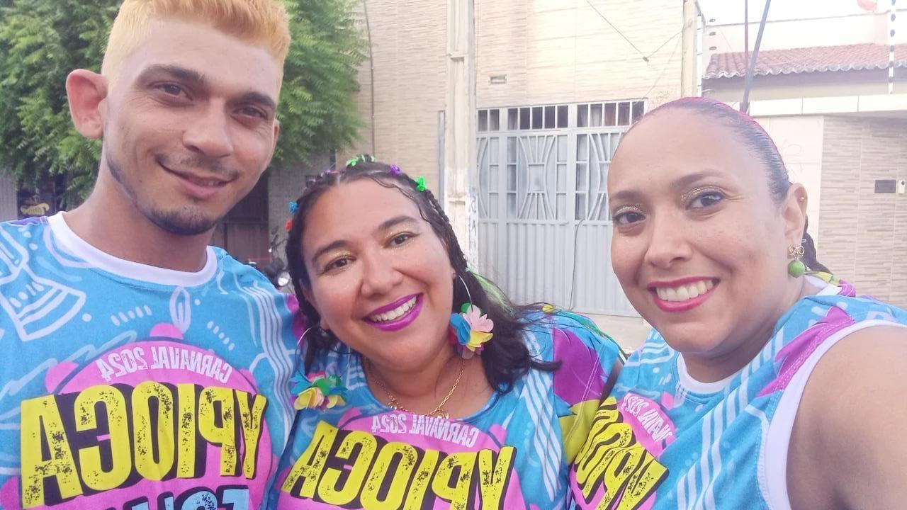
Foliões com abadá na edição de 2024.
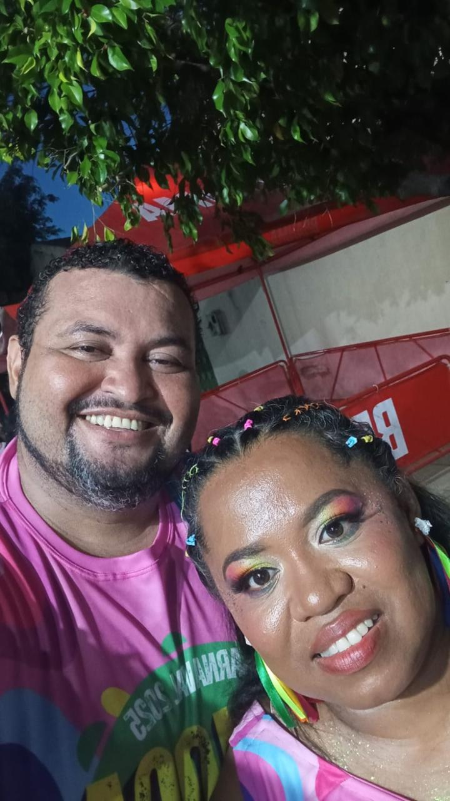
Foliões com abadá na edição de 2024.
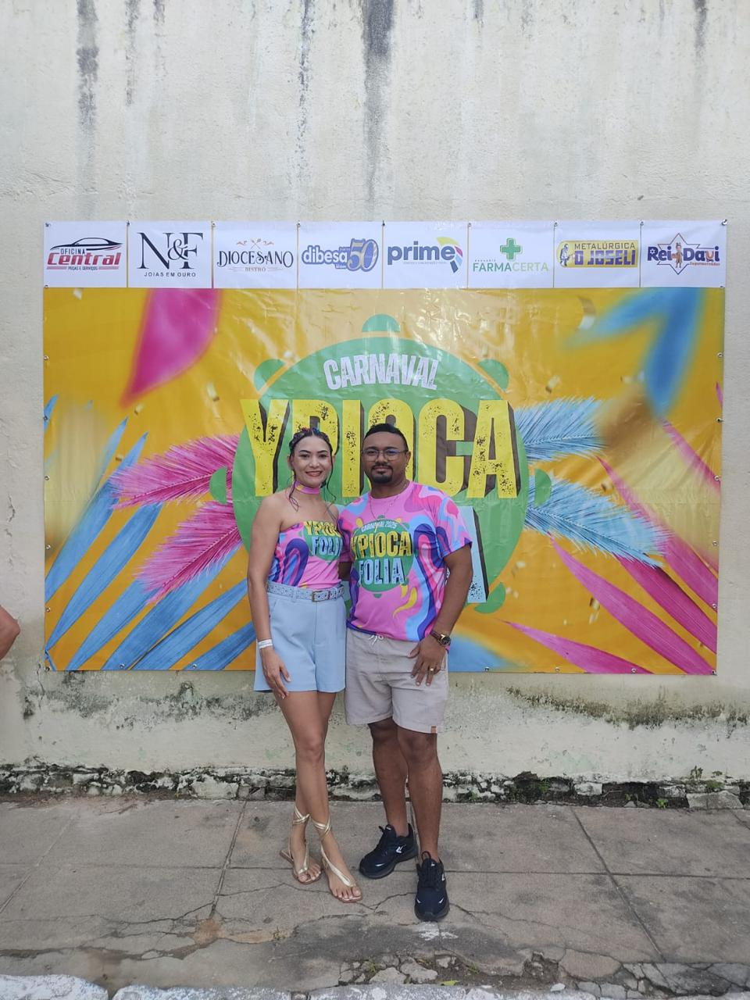
Foliões com abadá na edição de 2024.
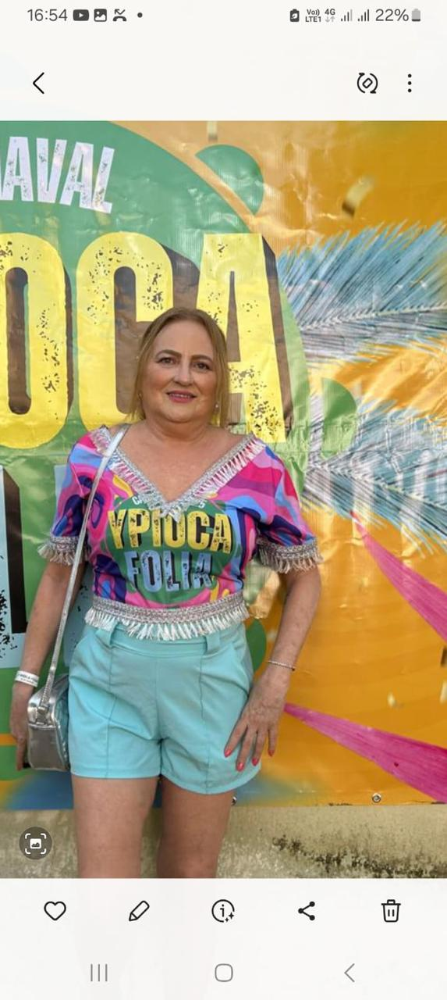
Segunda dia 12/02/204 Açaão Kids Parquinho.
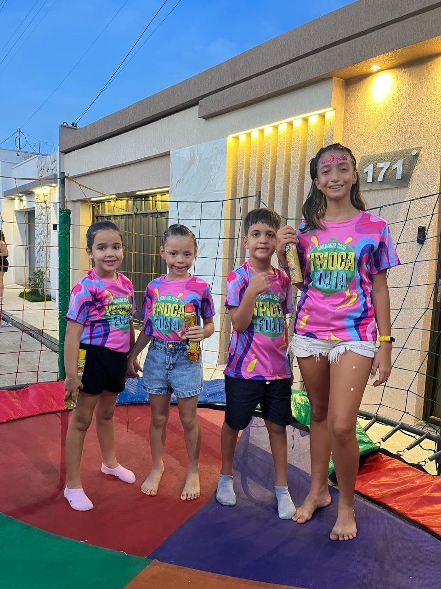
Foliões com abadá na edição de 2024.
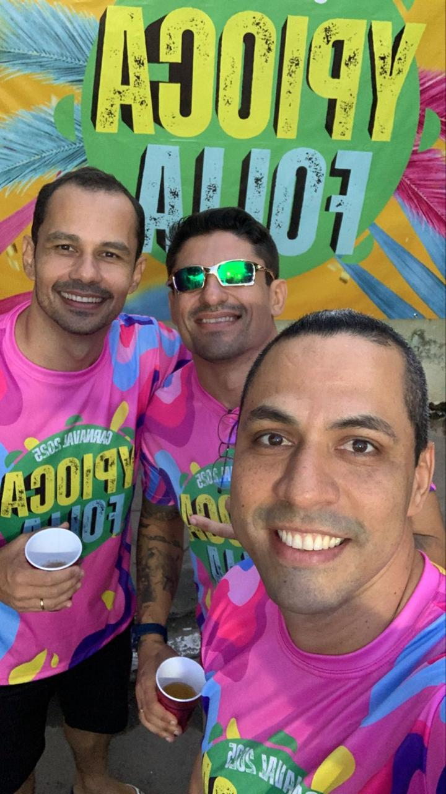
Foliões com abadá na edição de 2025.
Foliões com abadá na edição de 2025.
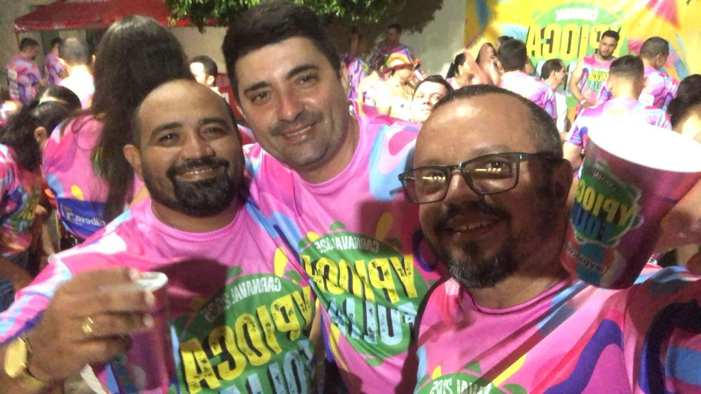
Foliões com abadá na edição de 2025.
Foliões com abadá na edição de 2025.
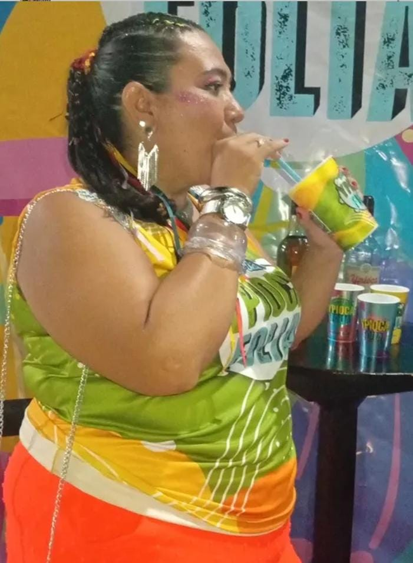
Foliões com abadá na edição de 2026.
Foliões com abadá na edição de 2026.
Foliões com abadá na edição de 2026.
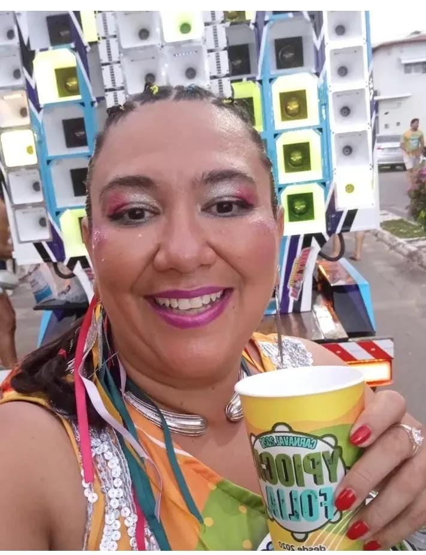
Foliões com abadá na edição de 2026.
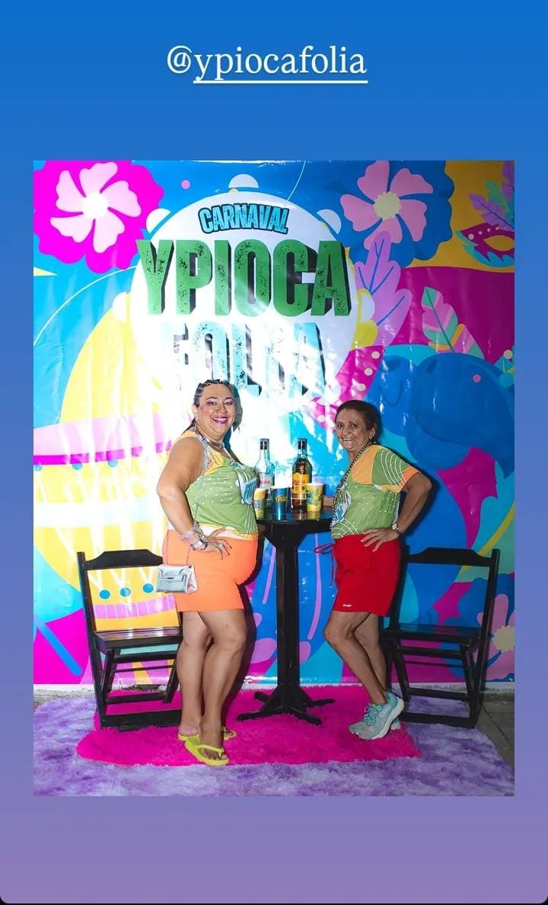
Foliões com abadá na edição de 2026.

Foliões com abadá na edição de 2025.
Cadastro para Adquirir Abadás
Área preparada para captar clientes interessados em adquirir abadás. O formulário abaixo possui campos de nome, e-mail e senha, pronto para você integrar futuramente a um sistema real.
Garanta seu lugar na folia
Cadastre seus dados para demonstrar interesse na compra de abadás do Ypioca Folia. Esta estrutura pode ser conectada depois a pagamento, lote, seleção de tamanho, quantidade de peças e confirmação automática por e-mail.
- Espaço para cadastro de clientes com visual profissional e responsivo.
- Campos essenciais: nome, e-mail e senha.
- Pronto para futura integração com WhatsApp, banco de dados ou checkout.
- Ideal para captação de interessados em abadás exclusivos.
Links de Comprovação
Área para organizar referências, registros e comprovações do portfólio. Mantive os links informados em formato mais limpo para facilitar a navegação.